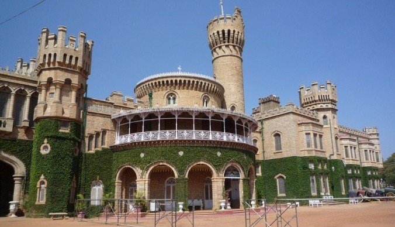
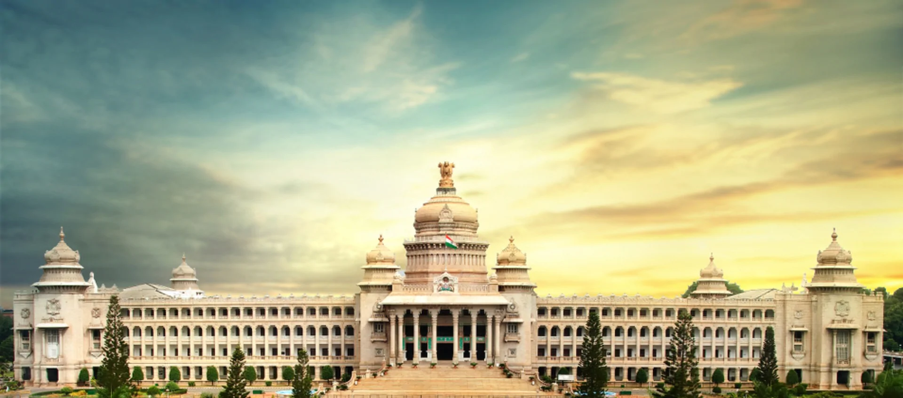
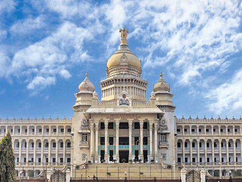
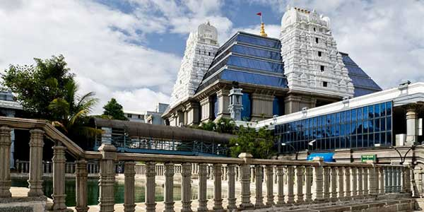
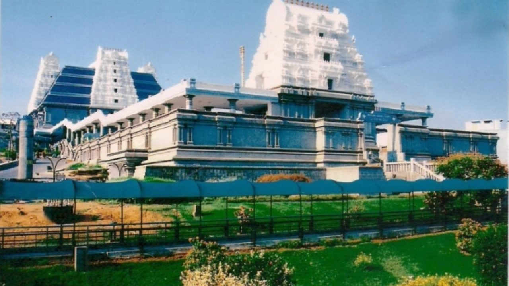

BANGLORE
1.Banglore Palace
.jpg)

The property was purchased from Rev. Garrett in 1873 at a cost of Rs. 40,000 by the British Guardians of the minor Maharaja Chamarajendra Wadiyar 10 using his personal funds. They were in charge of his education and administrative training to ready him to take over his reign in 1881 AD.
As the young Maharaja did not The cost of construction at that time was just ₹17.5 million (equivalent to ₹1.6 billion or US$23 million in 2019). But presently, annual maintenance cost itself is more than ₹20 million (US$280,000) including repairs, painting, and other miscellaneous expenses.
The building is closed on Sundays and public holidays but it attracts high number of visitors on those days for its magnificent exterior and colorful evening lighting.have a suitable place to stay during his training in Bengaluru, this property was purchased and transformed.
Construction of a palace building was started in April 1874 and completed by 1878. Mr. Cameron of Lalbagh did the landscaping.
Many additions and improvements were carried out in subsequent years. In the later years, Maharaja Jayachamaraja Wadiyar added some portions outside of Durbar Hall
e.g. the twin external staircase and platform for musicians.
The palace has a floor area of 45,000 sft, and grounds of 454 acres (183 ha).
2.Banglore Vidhana Soudha


The Vidhana Soudha has four floors above and one floor below ground level and sprawls across an area of 700 by 350 metres (2,300 by 1,150 ft).
It is the largest Legislative building in India. Its eastern face has a porch with 12 granite columns, 12 metres (40 ft) tall.
Leading to the foyer is a flight of stairs with 45 steps, more than 61 metres (200 ft) wide. The central dome, 18 metres (60 ft) in diameter,
is crowned by a likeness of the Indian national emblem.
The front of the building is inscribed with the slogan "Government's Work is God's Work," and the Kannada equivalent,
"ಸರ್ಕಾರದ ಕೆಲಸ ದೇವರ ಕೆಲಸ" (sarkarada kelasa devara kelasa).
In 1957, the Mysore government planned to replace the inscription with Sathyameva Jayate, at a cost of ₹7,500 (equivalent to ₹610,000 or US$8,500 in 2019), but the change did not take place.
In 1996, the inscription inspired a visiting US state governor, George Voinovich of Ohio, to propose etching "With God, all things are possible" onto the Ohio Statehouse, prompting a high-profile lawsuit.
The cost of construction at that time was just ₹17.5 million (equivalent to ₹1.6 billion or US$23 million in 2019). But presently, annual maintenance cost itself is more than ₹20 million (US$280,000) including repairs, painting, and other miscellaneous expenses.
The building is closed on Sundays and public holidays but it attracts high number of visitors on those days for its magnificent exterior and colorful evening lighting.
3.Cubbon Park


Cubbon Park, officially called Sri Chamarajendra Park is a landmark 'lung' area of Bengaluru city,
located (12.97°N 77.6°E) within the heart of the city in the Central Administrative Area.
Originally created in 1870, when Major General Richard Sankey was the then British Chief Engineer of Mysore state,
it covered an area of 100 acres (0.40 km2) and subsequent expansion has taken place and the area reported now is about 300 acres (1.2 km2).
It has a rich recorded history of abundant flora and fauna plantations coupled with numerous impressive and aesthetically located buildings
and statues of famous personages, in its precincts.
This public park was first named as Meade’s Park after Sir John Meade, the acting Commissioner of Mysuru in 1870 and subsequently renamed as Cubbon Park
after the longest-serving commissioner of the time, Sir Mark Cubbon. To commemorate the Silver Jubilee of Sri Krishnaraja Wodeyar’s rule in Mysore State, in 1927,
the park was again renamed as Sri. Chamarajendra Park, in memory of the 19th-century ruler of the state Sri Chamarajendra Wodeyar (1868–94),
during whose rule the park came into existence.
The landscaping in the park creatively integrates natural rock outcrops with thickets of trees, massive bamboos, with grassy expanse and flowerbeds and the monuments within its
regulated by the Horticulture Department of the Government of Karnataka. The predominantly green area of the park has many motorable roads, and the well-laid-out walking paths
running through the park are frequented by early morning walkers and the naturalists who study plants in the tranquil natural environment.
Tourists visiting this park in the city of Bengaluru have nicknamed the city itself as 'Garden City'.
4.Iskcon Temple


In May 1997, Bangalore ISKCON Temple was inaugurated by the ninth president of India—Shankar Dayal Sharma.
Since 1999 it is under control of ISKCON Revival Movement.
There is a gold-plated dhwaja-stambha (flag post) 17 m (56 ft) high and a gold plated kalash shikhara 8.5 m (28 ft) high.
There is free distribution of Sri Krishna prasadam to all visitors during the darshana hours.
The temple is open from 4:30 a.m. to 5:00 am. The day begins with a Grand arati ceremony called mangala-arati
followed by worship of Tulasi Devi, Sri Narasimha Arati and Suprabhata Seva for Sri Srinivasa Govinda.
The temple again opens at 7:15 a.m. for Shringara Darshana Arati.
5:15 a.m. to 7:15 a.m.: Japa Meditation session. The temple remains open until 1:00 p.m.
In the evening the temple is open from 4:15 to 8:15.
During weekends and public holidays Temple timings are 4:30 a.m. to 5:00 a.m.
and 7:00 a.m. to 8:30 p.m. without any break in the afternoon. The evening arati starts at 7:00 where devotees sing kirtan.
In the main temple the arati is performed by three priests. This arati is followed again by kirtan
where devotees can be seen dancing to the rhythm of "Hare Krishna Hare Rama".
5.Lalbagh Botanical Garden


Lalbagh Botanical Garden (Kannada: ಲಾಲ್ಬಾಗ್ ಬೊಟಾನಿಕಲ್ ಗಾರ್ಡನ್), or shortened Lalbagh, is an old botanical garden in Bengaluru, India.
First planned and laid out during the dalavaiship of Hyder Ali and later adorned with unique plant species by his son Tippu,
it was later managed under numerous British Superintendents before Indian Independence.
It was responsible for the introduction and propagation of numerous ornamental plants as well as those of economic value.
It also served a social function as a park and recreational space, with a central glass house dating from 1890 which was used for flower shows.
In modern times it hosts two flower shows coinciding with the week of Republic Day (26 January) and Independence Day (15 August).
As an urban green space along with Cubbon Park, it is also home to numerous wild species of birds and other wildlife.
The garden also has a lake adjoining a large rock on which a watchtower had been constructed during the reign of Kempegowda II.
6.Nandi Hills